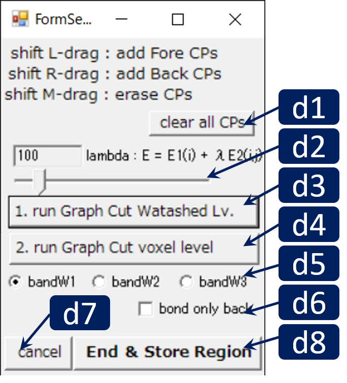

Region Growing and Thresholding

RoiPainter I/O Visualization Segmentation Download code (github)
Segmentation Graph Cut
この "Segmentation Graph Cut" モードでは，Graph Cut画像領域分割法による二値化を行えます．
Graph Cut画像領域分割とは，ユーザが粗く指定した前景画素・背景画素をクエリ―とし，「前景画素/背景画素に似た輝度値を持つ画素が前景/背景になるように」と「輝度値変化の激しい画素間に境界が置かれるように」という2つの制約を利用して前景領域を計算します．この制約の解を得るために容量付き有向グラフを生成しその最小カットを求めるため，Graph Cut法と呼ばれます．このツールでは以下の論文を参考に各制約の重みを計算しています．
[1] Li et al. Lazy snapping, SIGGRAPH 2004.
[2] Yuri Boykov and Marie-Pierre Jolly, Interactive Graph Cuts for Optimal Boundary & Region Segmentation of Objects in N-D images, ICCV 2001.
[1] Li et al. Lazy snapping, SIGGRAPH 2004.
[2] Yuri Boykov and Marie-Pierre Jolly, Interactive Graph Cuts for Optimal Boundary & Region Segmentation of Objects in N-D images, ICCV 2001.
Workflow
- ツールの起動 : "Menu > ModeSwitch > Segmentation Graph Cut" をクリック.
※ Graph Cutモードを起動すると，高速処理のための前計算が行われます．
※ 画像の大きさに依存しますが，前計算には数分かかる場合があります．
※ 前計算結果は独自形式で保存されており，次回から再利用可能です． - シードの配置 : メインウインドウにおいて，切断面上で "Shift + マウス左ドラッグ"すると前景シードを，"Shift + マウス右ドラッグ"すると背景シードを配置できます．
- シードの修正 : Shift + マウス中ドラッグで既存のシードを削除できます．Shift-左ドラッグで既存シードを移動できます．
- Graph Cut計算 （Watershedレベル）: "Run Graph Cut Watershed Lv."ボタンをクリックするとGraph Cut法により前景領域が計算されます．この計算は，Watershed法により粗く分割しておいた画像に対して行われます．精度は良くはないですが高速に動作します．
- Graph Cut計算 （画素レベル）: "Run Graph Cut Voxel Lv."ボタンをクリックするとGraph Cut法により前景領域が計算されます．この計算は，前述のWatershed LvのGraph Cut法により生成した前景領域に対し，厚みn-voxel分の帯状領域を生成し，この領域に対して行われます．画素レベルの精度で計算をするので滑らかな分割結果が得られることが多いです．
※Graph Cut Watershed lv.を一度実行し，必要に応じてGraph Cut voxel Lvを一度実行してください．
Main Windowの操作方法
- マウス L/M/R ドラッグ : 視点の平行移動/ズーム/回転
- マウス ホイール : 切断面の前後移動
- Ctrl + L ドラッグ : 曲面切断面の生成
- Ctrl + L クリック : 曲面切断面の削除
- Shift + マウスLドラッグ : 切断面上に前景制約点を配置する（赤点）
- Shift + マウスRドラッグ : 切断面上に背景制約点を配置する（青点）
- Shift + マウスMドラッグ : シードを削除する
Dialogの操作方法
 d1. 最小輝度値指定用スライダーd2. 最大輝度値指定用スライダー
d3. 閾値法実行ボタン
d4. 領域拡張法（6近傍）実行ボタン
d5. 領域拡張法（26近傍）実行ボタン
d6. 領域拡張の回数制限 on/off : onにしてあると，下のスライダーで指定した回数のみしか領域拡張の逐次計算が行われない
d7. 領域拡張の制限回数指定用スライダー
d8. 収縮・膨張・穴埋め処理ボタン．領域分割後このボタンを押すと，前景領域に収縮・膨張・穴埋め処理が施される．（ここでいう穴埋め処理とは前景領域内の中空領域を自動的に埋める処理，いわゆるCloasing operation都は違うので注意）
d9. 作業終了ボタン．このボタンを押すと現在の前景領域が新しいMask IDとして登録される．